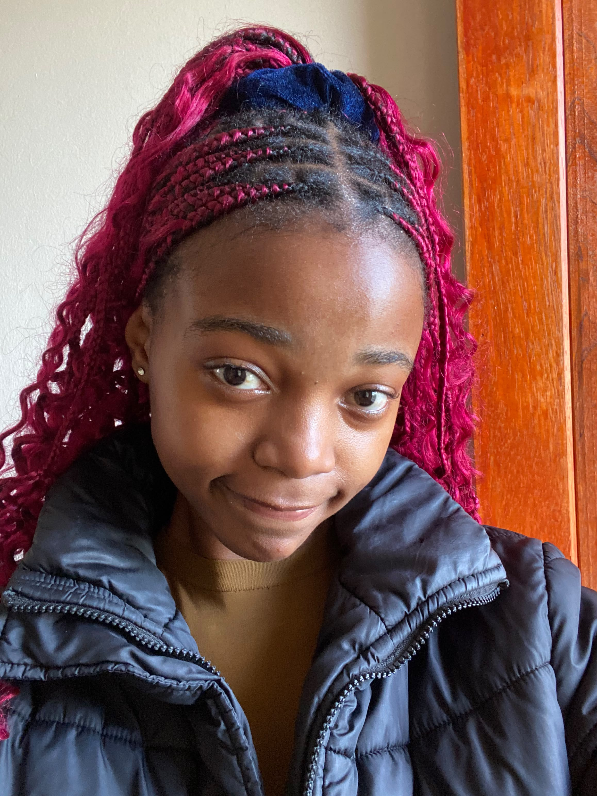

Simple recipes, big flavours — cooked with love.

Okay so basically I just love food and I love making it 🍳✨ I film everything I cook and put it here so you guys can try it too! no fancy stuff, just real food that actually tastes good 😋 Try the recipes, and let's eat!! 🔥
Ingredients: meat or vegetables of your choice · onions · tomatoes · garlic · oil · salt & spices
In this video I show you how to make a rich, comforting home-style stew — perfect for a weeknight dinner. Start by browning your meat or vegetables in a hot pan with a splash of oil until golden. Add finely chopped onions and garlic, cooking until soft and fragrant. Stir in diced tomatoes and your favourite spices, then let everything simmer on low heat for 30–40 minutes until the sauce thickens and the flavours come together beautifully. Serve hot with rice, pap, or bread.
Ingredients: ham · burger buns · lettuce · tomato · cheese · onion · mayo · ketchup · salt & pepper
Nothing beats a ham burger made from scratch! Season your ham generously with salt and pepper, then shape it into thick patties. Cook on a hot griddle or pan for about 3–4 minutes each side for a juicy medium burger. While the patties rest, lightly toast your buns in the same pan. Layer up with crispy lettuce, fresh tomato slices, melted cheese, and your favourite sauces. Stack it high and enjoy every bite!